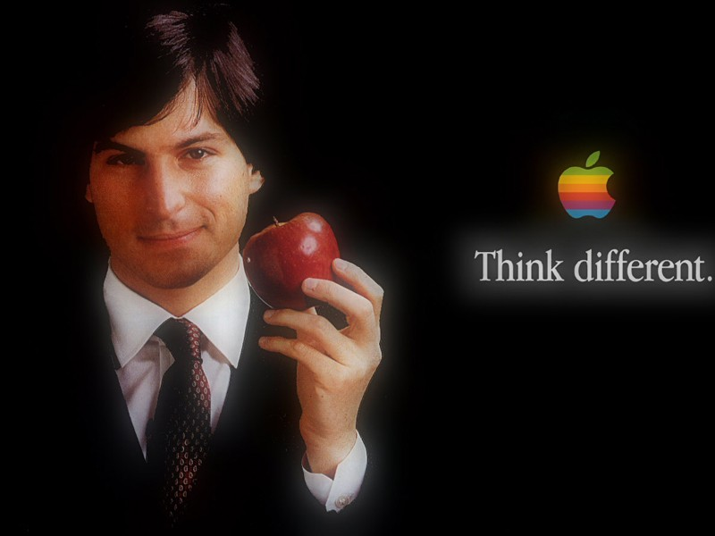

«Esto es para los locos» Así empezaba Steve Jobs un anuncio de Apple en el 1997 después de su vuelta a la empresa que él mismo había creado y de la que fue despedido. Es eslogan piensa diferente (Think Different) fue todo un lema para una generación de personas atraídas y seducidas por lo distinto, por lo irracional, un eslogan que llamaba a los que amaban el binomio arte-tecnología que Apple supo crear.
«ellos no son aficionados a las reglas y no tienen respeto por el status quo. Los puedes citar, puedes estar de acuerdo con ellos, puedes glorificarlos o vilipendiarlos, pero lo que seguro que no puedes hacer es ignorarlos»